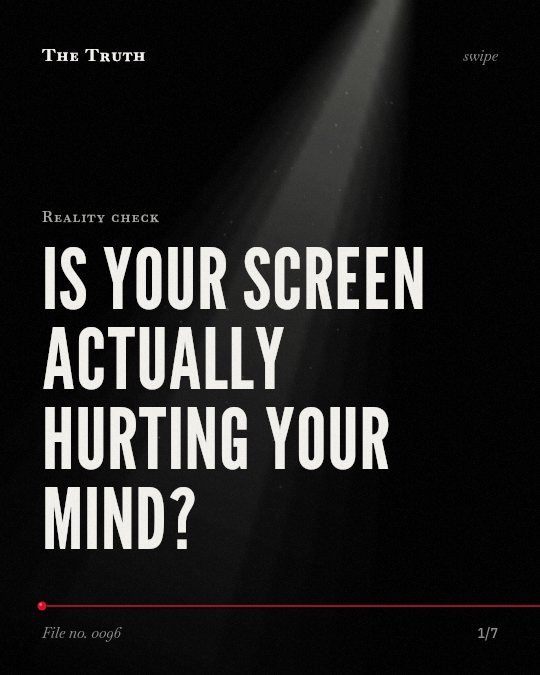

Reality check
Is your screen actually hurting your mind?

Evidence for social media impact is often weak.
Most reviews interpret the associations between social media use and mental health as weak or inconsistent.
Established. Several studies combined, or official data. The evidence is mixed.
What the research found
There was no or insufficient evidence for an association of screentime with eating disorders or suicidal ideation, individual cardiovascular risk factors, asthma prevalence or pain.
“There was no or insufficient evidence for an association of screentime with eating disorders or suicidal ideation, individual cardiovascular risk factors, asthma prevalence or pain.”
Systematic review, 2019. Stiglic & Viner, BMJ Open.
Mixed findings in the literature may stem from limited statistical power rather than an absence of real effects, especially in studies of general social media use and well-being.
“Mixed findings in the literature may stem from limited statistical power rather than an absence of real effects, especially in studies of general SMU and well-being.”
Meta-analysis, 2026. Tølbøll, Child and Adolescent Mental Health.
Most reviews interpreted the associations between social media use and mental health as 'weak' or 'inconsistent'.
“Results showed that most reviews interpreted the associations between social media use and mental health as 'weak' or 'inconsistent,' whereas a few qualified the same associations as 'substantial' and 'deleterious.'”
Meta-analysis, 2021. Valkenburg et al., Current Opinion in Psychology.
Problematic social media use was positively associated with depression, anxiety, and sleep problems, and negatively associated with wellbeing.
“In addition, problematic social media use was positively associated with depression, anxiety, and sleep problems, and negatively associated with wellbeing.”
Meta-analysis, 2024. Ahmed et al., Journal of Affective Disorders.
We found a small positive impact of organized sport activities on mental health outcomes among children and adolescents.
“We found a small positive impact of organized sport activities on mental health outcomes among children and adolescents.”
Meta-analysis, 2021. Boelens et al., Preventive Medicine Reports.
The data shows a complex picture.
Problematic social media use is linked to depression and anxiety. However, many studies lack the statistical power to confirm if real effects exist.
Your habits are more than just data.
That may be why you feel conflicted. The link between your screen time and your mood is not a straight line. It is a messy, inconclusive reality.
This part is our reading of the evidence, not a finding.
The blue light in a dark room.
You sit on the edge of your bed at 11 pm. The screen glows. You scroll through a feed of people you do not know. You feel a weight in your chest.
The honest summary
The evidence shows a complex picture where some specific types of social media use are linked to mental health problems, but the overall evidence is often weak or inconclusive.
Many studies on general social media use and well-being lack the statistical power necessary to confirm if real effects exist.
Does your screen define your mood?
Sources
- Patti M. Valkenburg, Adrian Meier, Ine Beyens (2021). Social media use and its impact on adolescent mental health: An umbrella review of the evidence. Current Opinion in Psychology. Meta-analysis, cited 748 times.
- Tølbøll KB (2026). Review: Social media use and adolescent mental health – an umbrella review and power analysis. Child and Adolescent Mental Health. Meta-analysis, cited 7 times.
- Mirte Boelens, Michel S. Smit, Hein Raat et al. (2021). Impact of organized activities on mental health in children and adolescents: An umbrella review. Preventive Medicine Reports. Meta-analysis, cited 64 times.
- Oli Ahmed, Erin Walsh, Amy Dawel et al. (2024). Social media use, mental health and sleep: A systematic review with meta-analyses. Journal of Affective Disorders. Meta-analysis, cited 173 times.
- Neza Stiglic, Russell Viner (2019). Effects of screentime on the health and well-being of children and adolescents: a systematic review of reviews. BMJ Open. Systematic review, cited 1,247 times.
Also read for this file, not quoted
- Sala et al. (2024). Social Media Use and adolescents' mental health and well-being: An umbrella review.
This file was researched and drafted by software, then checked by rules a model cannot talk its way around: each quote above was matched word for word against the paper, and every number had to appear in it. How files are made.